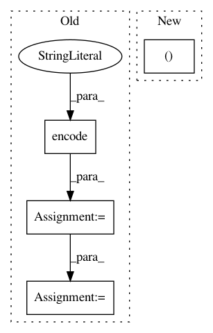

a04fdeac1f3d7ad8f0e49393bb48e090c124ef99,nilearn/datasets/tests/test_atlas.py,,test_fetch_atlas_talairach,#Any#,497
Before Change
@with_setup(tst.setup_tmpdata, tst.teardown_tmpdata)
def test_fetch_atlas_talairach(data_dir=tst.tmpdir):
extensions = nibabel.nifti1.Nifti1Extensions([
nibabel.nifti1.Nifti1Extension(
"afni", "*.background\nbrain.diagonal".encode("utf-8"))
])
fake = nibabel.Nifti1Image(
np.asarray([0, 1]).reshape(1, 2, 1),
np.eye(4),
nibabel.Nifti1Header(extensions=extensions))
os.makedirs(os.path.join(tst.tmpdir, "talairach_atlas"))
fake.to_filename(
os.path.join(tst.tmpdir, "talairach_atlas", "talairach.nii"))
talairach = atlas.fetch_atlas_talairach(data_dir=tst.tmpdir)
After Change
@with_setup(tst.setup_tmpdata, tst.teardown_tmpdata)
def test_fetch_atlas_talairach(data_dir=tst.tmpdir):
atlas._fetch_files = _mock_talairach_fetch_files
level_values = np.ones((81, 3)) * [0, 1, 2]
talairach = atlas.fetch_atlas_talairach("hemisphere", data_dir=tst.tmpdir)
assert_array_equal(talairach.maps.get_data().ravel(),
level_values.T.ravel())
In pattern: SUPERPATTERN
Frequency: 3
Non-data size: 4
Instances
Project Name: nilearn/nilearn
Commit Name: a04fdeac1f3d7ad8f0e49393bb48e090c124ef99
Time: 2017-11-17
Author: jerome@dockes.org
File Name: nilearn/datasets/tests/test_atlas.py
Class Name:
Method Name: test_fetch_atlas_talairach
Project Name: OpenNMT/OpenNMT-py
Commit Name: 4bcf6fdd93291a1bfba3c7038fe30a7338870968
Time: 2018-05-22
Author: pltrdy@gmail.com
File Name: onmt/models/SRU.py
Class Name:
Method Name:
Project Name: deepgram/kur
Commit Name: 35538e4eba517f561bd3c6cdb006a233042874e2
Time: 2017-01-31
Author: ajsyp@syptech.net
File Name: kur/model/hooks/slack_hook.py
Class Name: SlackHook
Method Name: send_message